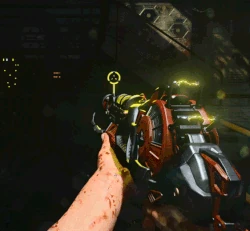
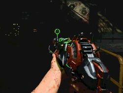

Demostracion de habilidades del arma
 
El Ray Gun Mark II es un arma maravillosa que se lanzó junto con el mapa de Zombies, en el mapa Buried y aparece en todos los mapas del modo Zombies, dicha arma especial no se especifica quien fue el creador pero se sospecha que fue el Dr. H. Porter ya que la variante del arma mejorada lleva como nombre RAYGUN MK2 DE PORTER, el arma es de rafagas con las cuales es muy facil el eliminar ordas de zombies en tren la municion es escasa hasta cierto punto pero la compensa con el da;o que logra realizar si es utilizada de la mnanera correcta. El arma es una de las mejores del juego amada por gran parte de la comunidad de Zombers desde su llegada en el ultimo DLC de BLACK OPS 2.
- DISPARO POR RAFAGAS
- TIENE VARIANTES ELEMENTALES
- ES UTIL PARA ELIMINAR A UNA GRAN CANTIDAD DE ZOMBIES
- EFECTIVA PARA DA;O COLATERAL
- MATA DE UNA RAFAGA HASTA RONDAS ALTAS
- UNICAMENTE SE PUEDE CONSEGUIR EN LA CAJA EXCEPTO EN BO4
- NO APARECE EN NINGUNA ENTREGA ANTES DE BO2